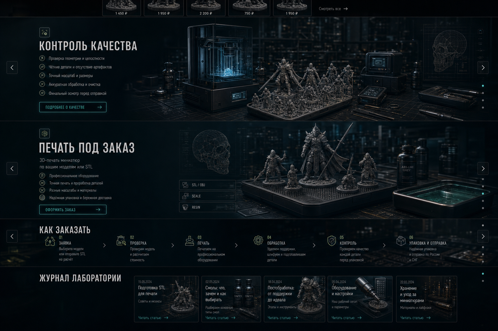
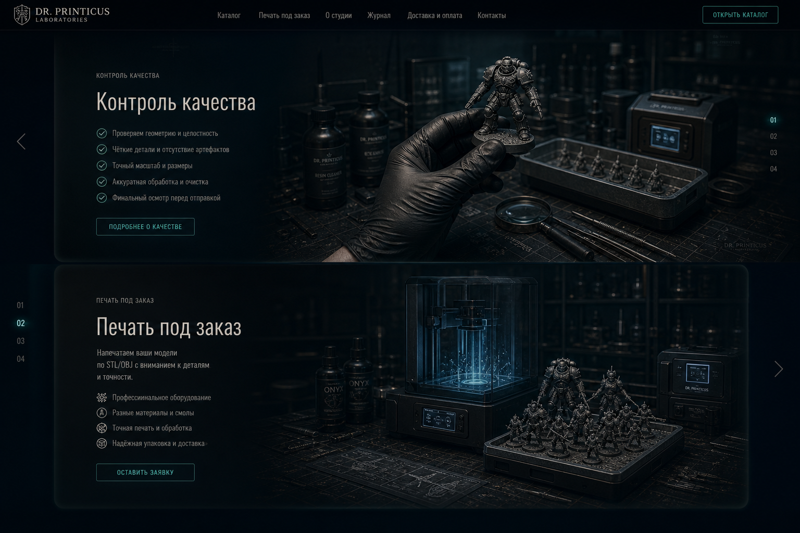
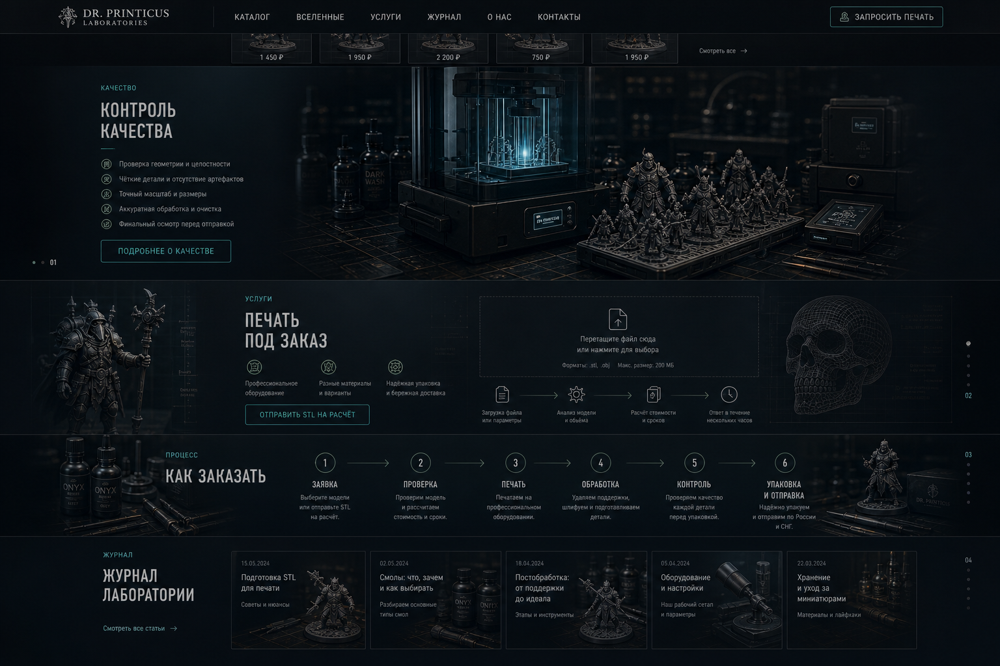

вариант J
Экранные секции без жёстких рамок
Ближе всего к текущему дизайну: те же блоки, но каждый занимает почти весь экран.

Открыть картинкуhome design preview
Сохраняем текущие секции и порядок, но делаем каждый нижний блок почти экранным: больше высота, ширина, отступы, мягкие границы и появление с левой/правой стороны при скролле.
вариант J
Ближе всего к текущему дизайну: те же блоки, но каждый занимает почти весь экран.

Открыть картинкувариант K
Секции сохраняют порядок, но композиция чередует крупный текстовый и визуальный блок.

Открыть картинкувариант L
Усиленный hero-подобный ритм: больше воздуха, мягкие поверхности и следующий блок виден ниже.

Открыть картинку